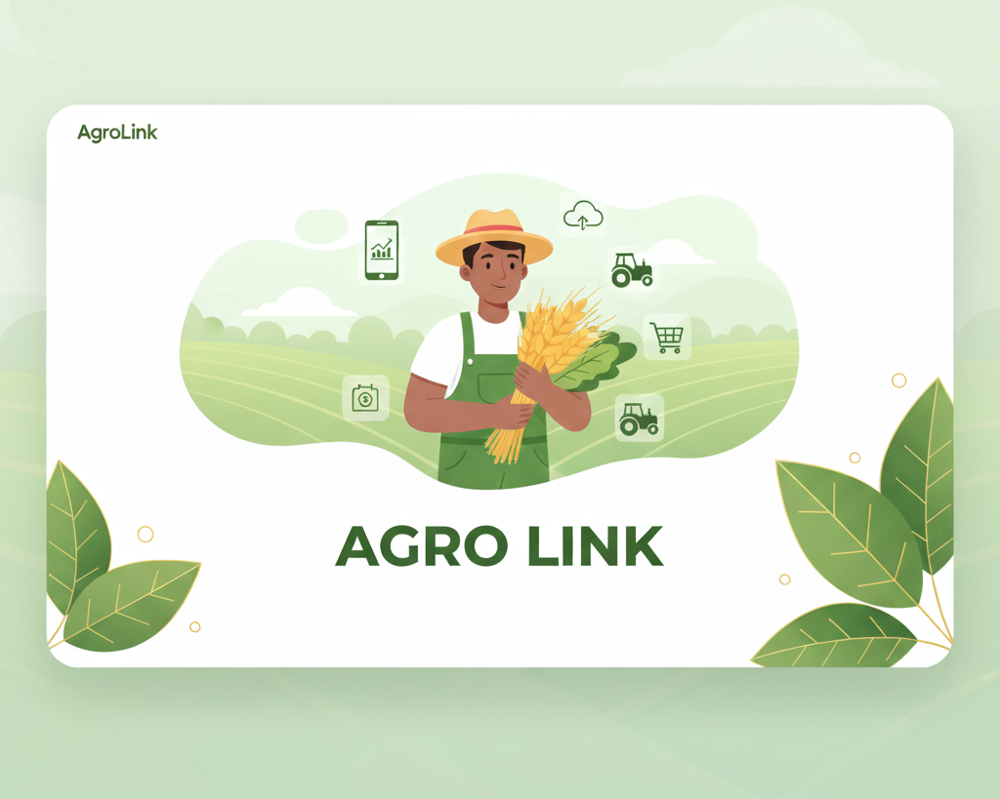

CONNECTING FARMERS &
BUYERS AT AGROLINK
Grow, trade, and prosper with AgroLink — the trusted platform that bridges the gap between local farmers and global markets.
SHOP NOW

Grow, trade, and prosper with AgroLink — the trusted platform that bridges the gap between local farmers and global markets.
SHOP NOWAgroLink is a digital platform that connects farmers, traders, and buyers in one trusted marketplace. We empower local farmers by helping them sell their produce directly to consumers and businesses — ensuring fair trade, transparency, and growth across agricultural communities.
With our vision of sustainable farming and digital access, AgroLink continues to bridge the gap between local markets and global opportunities.
LEARN MORE
AgroLink connects farmers straight to big buyers. This makes selling easier, faster, and more honest.
Use our easy online shop to list your produce. Buyers can check and buy your crops any time, day or night.
We handle the transport and shipping of your fresh produce. We track the order to make sure it arrives on time and stays fresh.

We use clear data to make sure farmers get a good, honest price. This supports your hard work and helps make trade fair for everyone.
We're Empowering farmers and connecting markets!